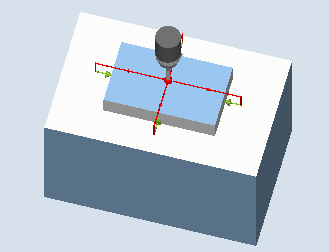
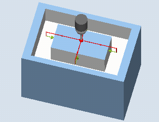

Mit dieser Messvariante kann ein Rechteckzapfen an einem Werkstück vermessen werden. Es werden die Zapfenbreite und Zapfenlänge gemessen sowie der Zapfenmittelpunkt ermittelt.
Die Messungen erfolgen immer parallel zu den Geometrieachsen der aktiven Ebene. Messungen an einem um die Zustellachse gedrehten Rechteckzapfen sind ebenfalls möglich. Dazu ist in der Parametrierachse ein Winkel entsprechend der realen Zapfenlage einzugeben. Das Antasten an die Seiten des Zapfens erfolgt immer rechtwinklig zu diesen.
Um den Zapfen kann eine Schutzzone festgelegt werden.
Bei der Messmethode "3D-Taster mit Spindelumschlag" wird die Messung in den Achsen der Ebene als Differenzmessung ausgeführt. Es erfolgen automatisch nacheinander zwei vollständige Messungen des Rechteckzapfens, einmal mit 180 Grad Spindelposition und einmal mit 0 Grad. Der besondere Ablauf dieser Messung erlaubt die Verwendung eines unkalibrierten multidirektionalen Messtasters. Der korrekte Werkzeugradius des Messtasters muss allerdings einmalig durch Kalibrieren (Abgleich) des Messtasters bestimmt werden. Die Messtastertypen 712, 713 und 714 sind dafür nicht geeignet. Eine positionierbare Spindel ist zwingend erforderlich.
Bei der Messmethode "3D-Taster ausrichten" wird die Schaltrichtung des Messtasters immer entsprechend der aktuellen Messrichtung ausgerichtet. Diese Funktion wird bei hohen Anforderungen an die Messgenauigkeit empfohlen. Die Messtastertypen 712, 713 und 714 sind dafür nicht geeignet. Eine positionierbare Spindel ist zwingend erforderlich.
Das Ergebnis der Messung (Messdifferenz) kann wie folgt verwendet werden:
Korrektur einer NV, sodass sich der Werkstücknullpunkt auf den Mittelpunkt des Rechteckzapfens bezieht.
Korrektur eines Werkzeuges,
Messung ohne Korrektur
Eine erweiterte Werkzeugkorrektur in Schwesterwerkzeuge sowie in Summen- und Einrichtekorrekturen ist möglich. Bei der Werkzeugkorrektur können generell Erfahrungswerte eingerechnet werden.
Es werden je 2 gegenüberliegende Punkte in den beiden Geometrieachsen der Ebene vermessen. Die Messungen beginnen in positiver Richtung der 1. Geometrieachse. Aus den 4 gemessenen Ist-Positionen der Zapfenseiten werden, unter Berücksichtigung der Kalibrierwerte, die Zapfenbreite und die Zapfenlänge berechnet. Entsprechend der gewählten zu korrigierenden Nullpunktverschiebung wird die Lage der Zapfenmitte als Werkstücknullpunkt ermittelt. Die Messdifferenzen der Seitenlängen dienen als Grundgröße für eine Werkzeugkorrektur. Die Lage des Zapfennullpunktes als Grundlage der Nullpunktkorrektur.
Mit der Auswahl Sollwertmittelpunkt "JA", kann die Lage der Rechteckzapfenmitte als Werkstücknullpunkt, durch Sollwertvorgaben definiert werden.
|  Messen: Rechteckzapfen (CYCLE977) |  Messen: Rechteckzapfen mit Schutzzone (CYCLE977) |
Der Messtaster muss als Werkzeug aktiv sein.
Werkzeugtyp des Messtasters:
3D Multi-Taster (Typ 710)
Monotaster (Typ 712)
Sterntaster (Typ 714)
| Hinweis |
Folgende Messmethoden sind nur in den Achsen der Ebene möglich:
Für diese Messmethoden können die Messtastertypen 712, 713 und 714 generell nicht verwendet werden. |
| Hinweis |
In Verbindung mit den Funktionen "3D-Taster mit Spindelumschlag", "3D-Taster ausrichten" oder bei Verwendung der Messtastertypen 712 und 714 ist eine SPOS-fähige Spindel erforderlich. |
Der Messtaster ist über den Rechteckzapfen auf die Sollposition des Mittelpunkts zu positionieren. Diese, über den Zapfen angefahrene Position, stellt die Startposition und gleichzeitig den Sollwert für die zu ermittelnden Korrekturen dar.
Es muss gewährleistet sein, dass mit dem eingegebenen Zustellweg, von der Höhe der Startposition aus, die gewünschte Messhöhe am Rechteckzapfen erreicht werden kann.
Eine Schutzzone hat auf die Startposition keinen Einfluss.
| Hinweis |
Ist der Messweg DFA so groß gewählt, dass die Schutzzone verletzt würde, so wird im Zyklus der Abstand automatisch verringert. Genügend Raum für die Messtasterkugel muss jedoch vorhanden sein. |
Die Messzyklen-Endposition der Messtasterkugel ist mittig über dem Zapfen in Höhe der Messzyklen-Startposition.
| Hinweis |
Die Streubreite des Zyklenstartpunktes muss bezüglich des Zapfenmittelpunktes innerhalb des Werts des Messwegs DFA liegen, sonst besteht Kollisionsgefahr oder die Messung kann nicht ausgeführt werden! |
Siehe auch:
Messen: Rechteckzapfen (CYCLE977)